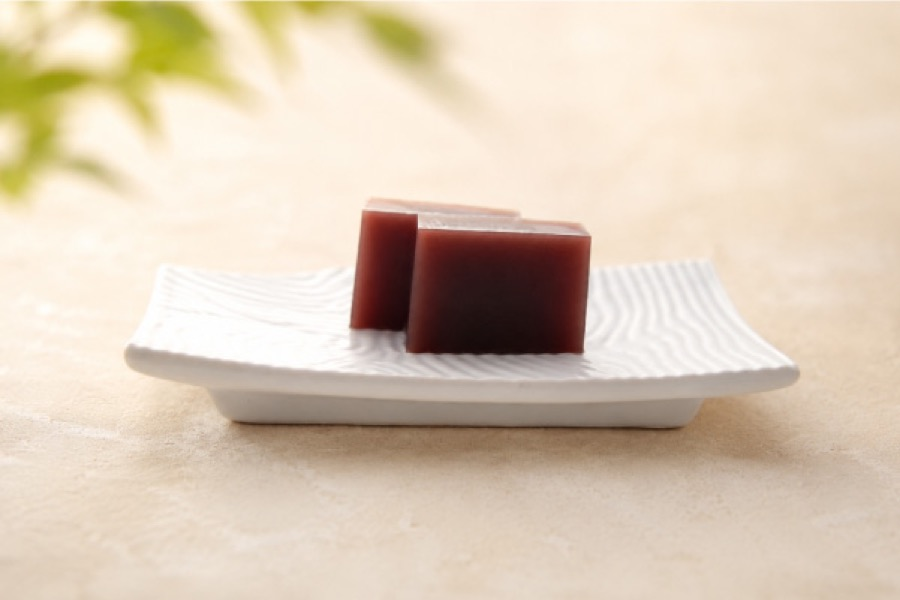
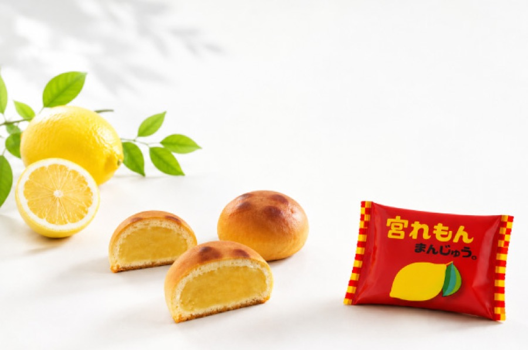

本店
できたての生菓子が豊富
すべて本店で製造をしています。
- 住所
- 〒320-0864 栃木県宇都宮市住吉町15-17
- 営業時間
- 9:30 – 18:00
- 定休日
- なし（元日のみ店休）
- 駐車場
- 12台
県立博物館の目の前。赤い看板が目印です。
季節でお出しするものが変わります。詳しくは各店へお問い合わせください。
創業からの看板


宇都宮に2店、那須烏山と大田原に1店ずつ。それぞれ品揃えが違います。
本店
すべて本店で製造をしています。
県立博物館の目の前。赤い看板が目印です。
双葉店
広くゆとりのある店舗です。人気はどら焼きの詰合せ。
南那須店
直売所ならではの品揃え。煎餅の種類も品数も豊富で、特価品やレア商品にも出会えます。
東武大田原店
入口を入ってすぐの店舗。焼きたてのお菓子が楽しめます。
オンラインショップでもご注文いただけます。
クレジットカード
楽天カード、VISA、MasterCard、JCB、AMEX、Diners のカードマークが ついたクレジットカードであればどのカードでもご利用いただけます。
代金引換
配送業者は日本郵便（ゆうパック）。注文確定メールに記載の金額を、 商品配送時にご用意ください。
返品のご連絡先 028-635-0003
返品先 〒320-0864 栃木県宇都宮市住吉町15-17 すずらん本舗 返品係宛
4店舗あります。本店（宇都宮市住吉町15-17、県立博物館の目の前）、 双葉店（宇都宮市双葉1-13-28）、南那須店（那須烏山市下川井2128、 煎餅工場の敷地内）、東武大田原店（大田原市美原3537-2、 大田原東武百貨店1階）です。
本店・双葉店は定休日なし、南那須店は水曜定休です。 いずれも元日（1月1日）は店休となります。 東武大田原店は東武大田原店カレンダーによります。
本店12台、双葉店8台、南那須店7台の駐車場があります。 東武大田原店は百貨店の駐車場を多数ご利用いただけます。
オンラインショップでご注文いただけます。お支払いはクレジットカード （楽天カード、VISA、MasterCard、JCB、AMEX、Diners）または 代金引換に対応しています。配送は日本郵便（ゆうパック）です。
すべて本店で製造しています。本店はできたての生菓子が豊富です。
贈答用の詰合せ、慶弔のご用命などもご相談ください。